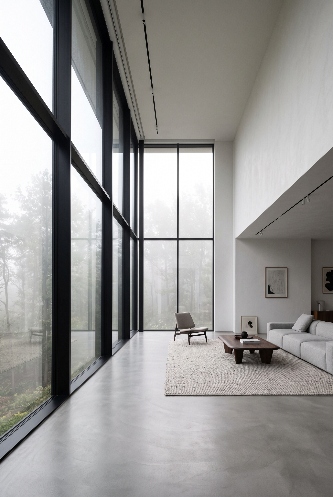
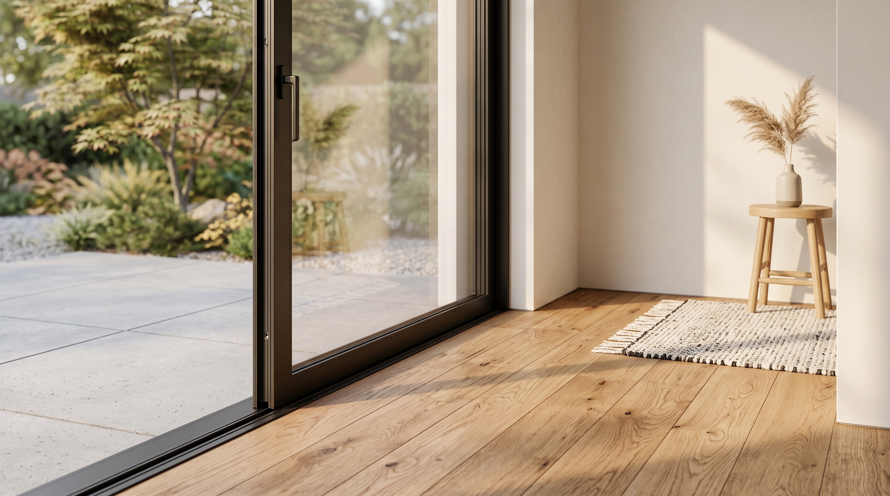
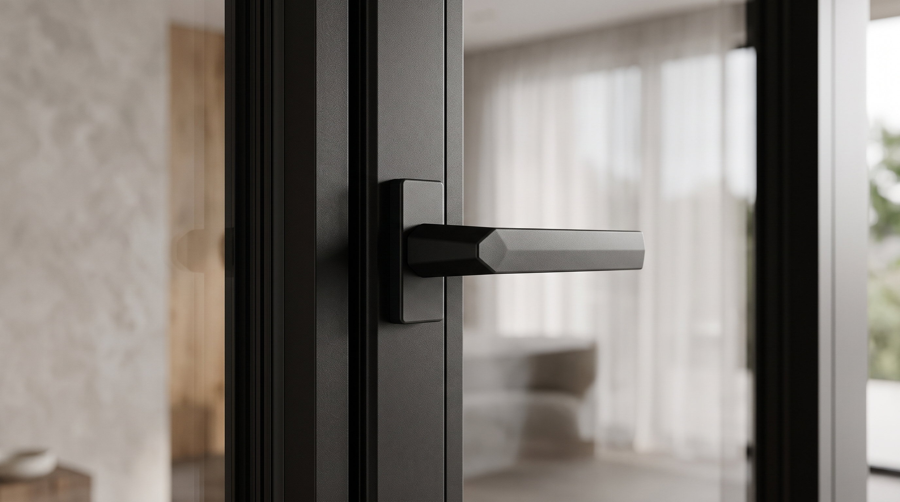
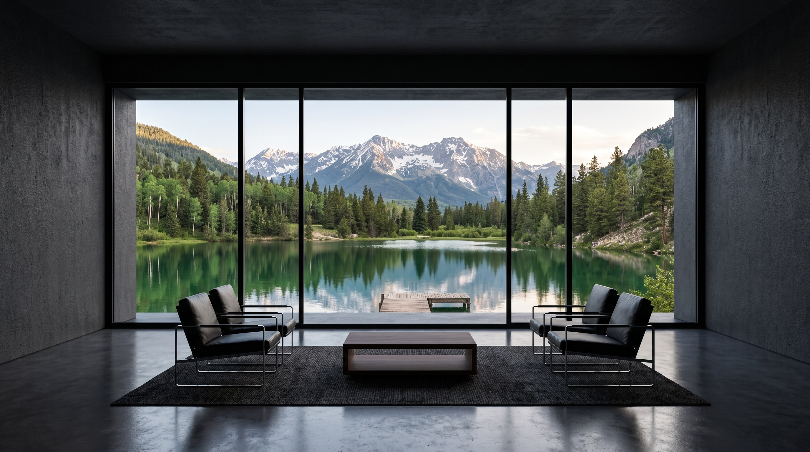

Proprietary system technologies support product selection, system configuration and project-specific detailing.

E-GOOO Windows & Doors
Where architecture breathes and life flows.
Designed Around Living
Window and door systems
that connect architecture, daylight and everyday life.
Explore Systems



Company Philosophy
Where architecture breathes and life flows.
At E-GOOO, we believe a window is more than a connection between inside and outside. It brings architecture, nature and everyday living together. We create high-performance window and door systems that combine comfort, design and lasting performance, allowing natural light, fresh air and surrounding views to become part of every space.
From design to manufacturing, we are committed to quality, innovation and craftsmanship. Every detail is carefully considered because we believe great windows should complement the architecture they belong to. Whether for private homes, renovations or contemporary building projects, our goal is to create solutions that stand the test of time while enhancing the way people experience a space.
At E-GOOO, we don't simply manufacture windows and doors. We create lasting connections between people, architecture and the spaces they live in.
Where architecture breathes and life flows.

Product Showcase
Triple-Glazed Systems for High-Performance Buildings
As light enters a building, the view opens up—and comfort begins with the window.
E-GOOO triple-glazed window and door systems are developed for premium homes, renovation projects, residential developments and low-energy buildings. Within clean, refined architectural lines, they bring together structural stability, thermal performance, acoustic comfort and protection against the elements, giving architects, distributors, contractors and project teams greater freedom to balance design with long-term performance.
Triple insulating glass and 4SG warm-edge sealing are combined with RT thermal-break technology, insulated glazing edges and a multi-level sealing system. Working together, these elements help reduce thermal bridging, uncontrolled air leakage and unnecessary heat transfer, creating interiors that remain more stable, quiet and comfortable throughout the seasons.
6060-T66 aluminium profiles, weather-resistant EPDM seals and the E-SDD pressure-balanced drainage system provide a dependable foundation for large glazed areas, slim sightlines and demanding weather conditions. Each element is designed as part of an integrated system, allowing architectural expression and practical performance to exist in balance.
From system selection, glazing configuration and technical development to manufacturing, quality control and delivery support, E-GOOO works with its partners to translate architectural ideas into window and door solutions suited to different buildings, climates and patterns of use.
A window is more than the boundary of a building. It is where light, space and everyday life come together.

Introduction
High-performance systems for refined architectural openings.
E-GOOO provides high-performance aluminum window and door systems and customized project solutions for distributors, contractors, architects and project teams. The systems support residential developments, commercial buildings, low-energy buildings and Passive House projects.
Learn More About E-GOOOPassive House windows certified by the Passive House Institute, Germany, for projects with defined energy-efficiency requirements.
PREFSUITE production management connects with ELUMATEC automated sawing, drilling and milling for precise linked manufacturing control.
Technical evaluation, sample approval, manufacturing, quality inspection, logistics coordination and after-sales support.